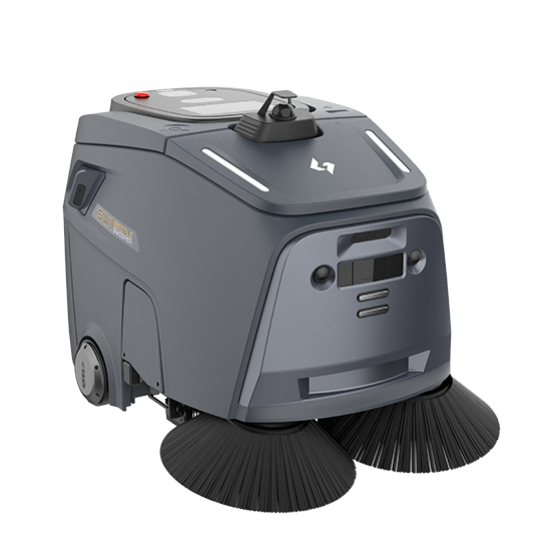
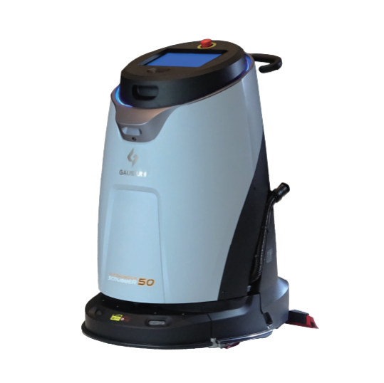
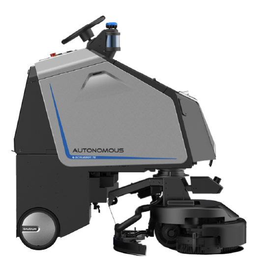
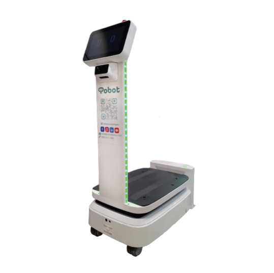
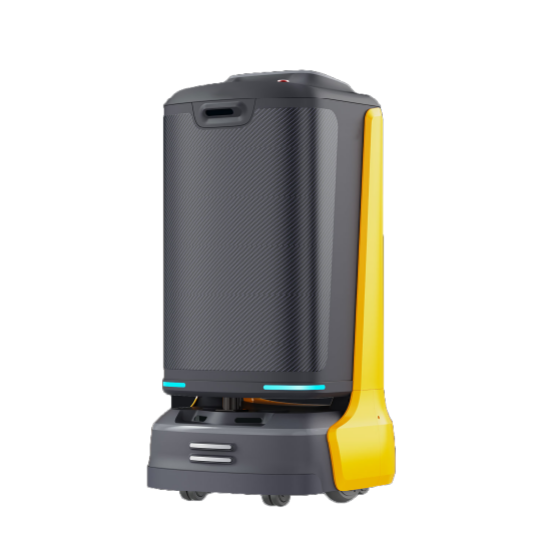
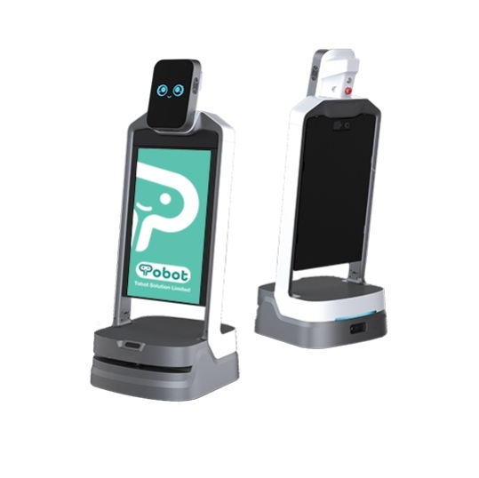
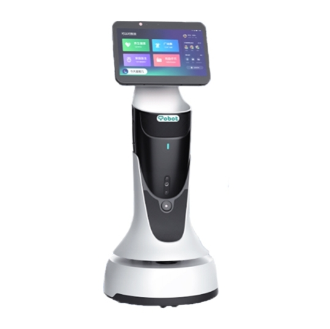
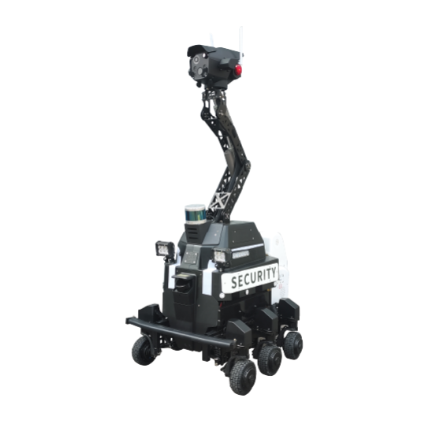
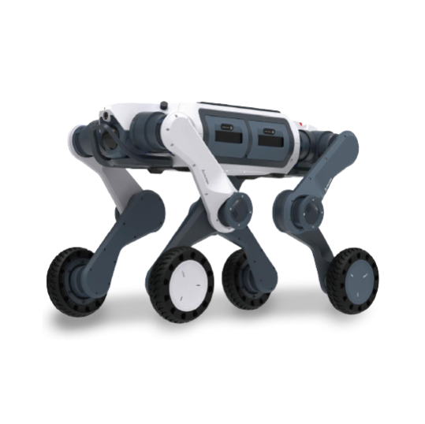

後備人手
【待填：機械人暫停時由誰接手、啟動條件與通知流程】
物業每日要巡、要清、要送、要接待，工序重複、人流複雜。BottiZ 讓機械人補上重複而固定的工序，讓同事專心處理需要判斷的事。
分工的原則是：重複、路線固定的交給機械人；需要判斷、溝通與應變的留給同事。
實際分工比例按場地而定，勘察後才會建議。
機械人暫停運作時，服務不應中斷。以下安排會在勘察及方案階段，與管理處書面確認。
【待填：機械人暫停時由誰接手、啟動條件與通知流程】
【待填：報修渠道、響應時間及後備機安排】
【待填：保養週期與停機通知方式】
【待填：中斷時機械人的處理方式】
機械人與住戶、訪客共用空間，安全與責任分界須事先講清楚。
【待填：避障與行人安全機制說明】
【待填：緊急停止方式與位置】
【待填：責任分界與保險範圍】
【待填：鏡頭及運行數據的處理與私隱政策】
試行或啟用機械人前，可參考範本向住戶、租戶及同事發出通告。
【待填：通告範本檔案（PDF 或 Word）】
以下機型來自 BottiZ 現有的物業管理方案，實際組合視乎場地範圍、人流及管理處的需要。











先勘察、再示範，確認合適才部署。以下是 BottiZ 落地六步，每步都有明確交付。
交付需求清單與成功指標
交付路線、網絡、電梯及人流評估報告
交付機型組合與 ROI 估算
交付示範結果與客人回饋
交付驗收清單與培訓記錄
交付月度成效報告與保養紀錄
BottiZ 的做法是補位：機械人負責重複而固定的工序，判斷、溝通與應變仍由同事處理。實際分工會在場地勘察後，與管理處逐項確認。
BottiZ 會先做場地勘察，評估路線、網絡、電梯及人流。您可先下載「勘察前準備清單」，預先了解需要預備的資料。
可以。「BottiZ 落地六步」包括實機示範，先在實際場地看結果，再討論機型組合與安排。
本頁「適用機型」按清潔、巡邏、配送及接待列出現有機型，實際組合視乎場地範圍、人流及管理處的需要。
【待填：後備人手與故障處理安排，待確認後填寫】
【待填：試行條款與終止安排，待確認後填寫】
由勘察開始，我們會逐項說明路線、網絡、電梯與人流的評估結果。